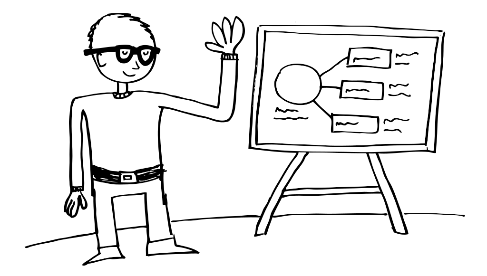

I am a UX Designer at nForm. I use doodling, interactive prototyping, and usability testing to help teams explore ideas and create solid designs for complex web applications. During my time off I enjoy touring on my folding bike, playing narrative-driven video games, and cooking the perfect apple oatmeal pancakes. I'd love to talk with you!